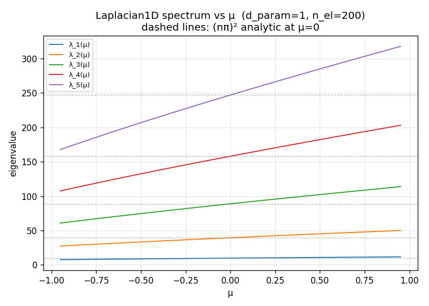
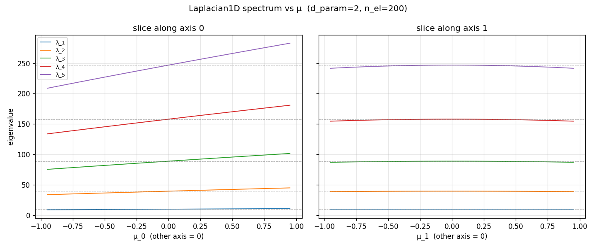
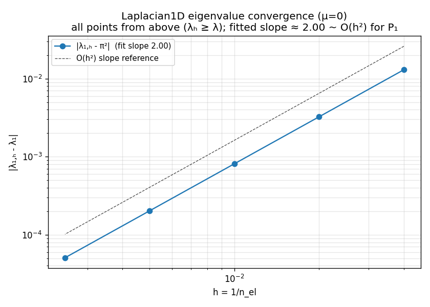
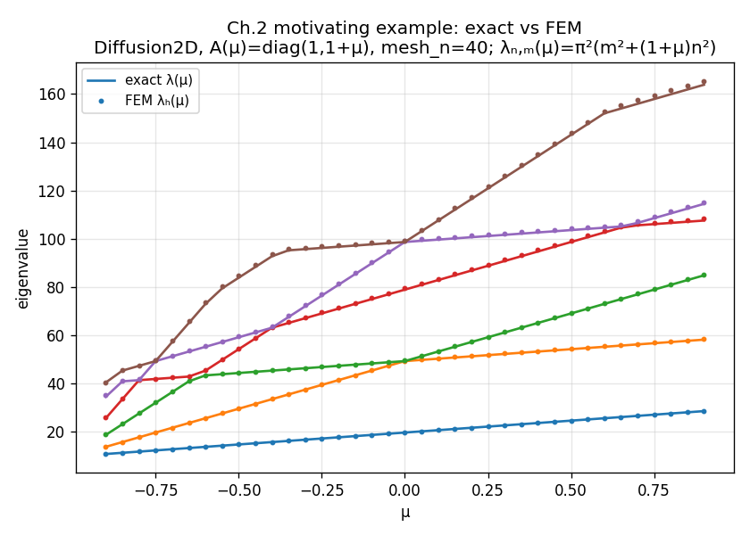

Is the finite-element substrate trustworthy?
Before any adaptive machinery enters the picture, the question is whether the finite-element discretisation the whole method rests on can be trusted. That question has two separable parts, and this page is careful to say which one each figure answers:
- (A) Does the FE method converge? — does the discrete eigenvalue \lambda_h approach the true \lambda as the mesh is refined, at the rate the theory predicts? This is a statement about the discretisation.
- (B) Is the assembly wired correctly? — assembly, Dirichlet BCs, and the parametric coefficient with no bug. This is a statement about the implementation.
The two eyeball figures below answer (B) — they are a wiring smoke test, not a convergence proof. The convergence section answers (A) with a falsifiable rate study, and the motivating-example overlay ties both to a first correctness check against a closed-form spectrum. Mesh-independence of the reduced model is a separate, later claim.
Two axes are in play and the page keeps them apart:
- The space axis is discrete. \lambda_h is an approximation — it sits near, not on, the analytic value, and the gap only closes as h \to 0 (quantified in the convergence section). A single-mesh figure landing close to (n\pi)^2 shows the plumbing is sane; it does not show the method converges.
- The parameter axis is genuinely continuous. Each \lambda_n(\mu) is a real, smooth curve of the parametric operator — solved at sample points here, but a continuous object. Smoothness, stable ordering, and the absence of spurious kinks are meaningful properties of the parametric problem, and they are drawn correctly.
1D parametric Laplacian (test fixture)
Test fixture — not a physics target. Fast 1D scalar problem used to unit-test the parameter-dimension-agnostic infrastructure cheaply. Do not draw physics conclusions from it.
Model
On \Omega = (0, 1) with homogeneous Dirichlet boundary conditions,
-\bigl(a(\mu)\,u'\bigr)' \;=\; \lambda\,u, \qquad u(0)=u(1)=0,
with a piecewise-constant parametric coefficient a(\mu).
Correctness signature (wiring smoke test)
- At \mu = 0, the coefficient is a \equiv 1 and the leading eigenvalues sit close to the analytic spectrum \lambda_n = (n\pi)^2 (dashed reference lines) — close, because the space axis is discrete (see the note above).
- Each \lambda_n(\mu) is a smooth curve — no kinks or jumps.
- Eigenvalue ordering is stable along the parameter path.

1D Laplacian, two-parameter coefficient
The same fixture exercised with a two-parameter coefficient: each panel sweeps one parameter axis with the other held at 0. This is the same 1D Laplacian problem — it is not the 2D diffusion model — and its purpose is to smoke-test that the parameter-dimension-agnostic infrastructure (snapshot store, sweep driver, grid) behaves identically as the parameter dimension grows. It precedes the true one-parameter benchmark on the diffusion-3-3-2 page.

Does the method converge?
The figures above are single-mesh snapshots; on their own they say nothing about claim (A). The convergence study does. For the 1D Laplacian at \mu=0 the exact leading eigenvalue is \lambda_1 = \pi^2, so we can refine the mesh (n_{\text{el}} \in \{25, 50, 100, 200, 400\}) and watch the discretisation error |\lambda_{1,h} - \pi^2| shrink.

Two theory-backed properties hold, and either failing would be a real bug:
- Rate. The error decays at O(h^2) — the fitted log–log slope is \approx 2, exactly the Babuška–Osborn rate for P_1 eigenvalue approximation (O(h^{2k}) for P_k). This is a falsifiable statement the single-mesh (n\pi)^2 eyeball cannot make.
- From above. Every \lambda_{1,h} \ge \lambda_1. Conforming Galerkin on a subspace V_h \subset V can only overestimate eigenvalues (min–max over a smaller space), so monotone convergence from above is the signature of a correctly conforming discretisation. A point dipping below \pi^2 would signal a non-conforming bug.
The rate and the from-above property are both pinned by regression so that a regression in the assembly path is caught rather than silently degrading this page.
A motivating example
A natural first correctness check is an exact-vs-FEM overlay: a model whose spectrum is known in closed form, plotted against the computed FEM spectrum across the whole parameter range.
The model is -\operatorname{div}(A(\mu)\nabla u) = \lambda u with A(\mu) = \operatorname{diag}(1, 1+\mu) on the domain [0,1]^2 with Dirichlet BCs. The eigenfunctions are \sin(m\pi x)\sin(n\pi y) and the spectrum is closed-form:
\lambda_{n,m}(\mu) \;=\; \pi^2\bigl(m^2 + (1+\mu)\,n^2\bigr).

The FEM dots track the closed-form lines across the entire \mu-range, sitting just above them (claim (A) again, now on the real 2D physics target rather than the 1D fixture). Two things to notice:
- The eigenfunctions are \mu-independent here (a deliberate simplification of the motivating example), so the only \mu-dependence is in the eigenvalues — yet the curves still cross. Those crossings are exactly what motivates eigenvalue tracking and the reduced-basis rank argument, and they feed directly into the parametric sweep problems built on this substrate.
- This overlay is the honest version of “trust the substrate”: a model where we know the answer, checked against the code across the whole parameter domain — not a single-mesh glance.